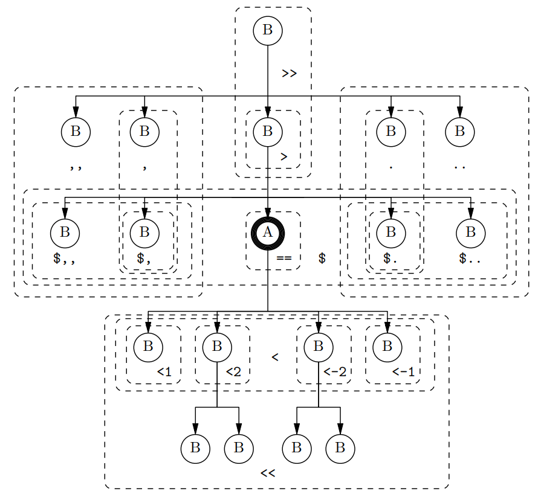

TGrep2 and Tregex are tools for searching syntax trees. This guide introduces their shared query language which is available when searching for data with the online search interface.
TGrep (Pito 1994) was the original tree-matching command-line program that came with the Penn Treebank. TGrep2 (Rohde 2005) is an implementation that adds extensions to the query language. Tregex (Levy and Andrew 2006) is yet another implementation that replicates the extended search functionality of TGrep2 while also offering a desktop application for directly browsing source trees, and even manipulating syntax trees in traditional bracketed (Penn) treebank notation. This guide provides an introduction to the extended query language which is shared by both TGrep2 and Tregex and which is available when searching for data with the online search interface.
Search queries are expressed as patterns that consist of node descriptions to match nodes and relationships defining links or negated links to other nodes. Notably:
Typically, spaces are optional in patterns. But for readability, it is usually best to place spaces between relationships and node expressions.
Single tree nodes are matched by node descriptions:
If a simple character string or a regular expression begins with an exclamation mark (!), the matching process will be complemented. That is, matches will turn into non-matches, and vice-versa. For example, !VB can match any node that is not VB, and !/^I/ can match any node that does not start with I.
Specified as a string with surrounding slashes (/), a regular expression matches a node if there is a part of the node that is matched. For example, (1) matches よう, ようやく, そのような, おはよう, etc.
The caret symbol (^) anchors the regular expression to the beginning of a matched node. So, (2) cannot match そのような or おはよう but can match よう and ようやく.
A dollar sign ($) as the last character will anchor the regular expression to the end of a matched node. For example, the caret and dollar-sign in (3) restricts matching to あの, この and その.
Note how (3) contains round brackets ((, )) which are used to mark a subexpression called a block or capturing group. Within a capturing group the pipe symbol (|) can be used to separate subexpressions with the meaning to match at least one of the subexpressions.
Note, care is needed when writing regular expressions that end with dollar signs. This is because you are forced to predict what the end content of a node could be. For example, suppose you wished for a node description that would match all bare noun phrases, that is, all noun phrase nodes that lack functional extensions. In addition to matching nodes that are simply NP, you will also want to match nodes like NP;{BOY}. However, you will not want to match either NP-SBJ or NP-SBJ;{BOY}, since these have subject (-SBJ) functional marking. A regular expression able to match all bare noun phrases is (4).
Note how (4) contains a capturing group that ends with a question mark symbol (?) saying to match its preceding element (the capturing group) one or zero times. Also note how the capturing group contains a dot symbol (.) that is a character wildcard to match any character and a plus symbol (+) saying to match its preceding element (any character) one or more times. In contrast, the semi-colon character (;) will only match itself.
A regular expression can also be constrained with ‘\b’ to mark a word boundary. Thus, (5) can match NP and NP-PRD but will not match NPR.
Word boundary markers are typically used to constrain matching nodes at the constituent level of structure (e.g., /^NP\b/, /^ADVP\b/, /^IP-MAT\b/) and this is generally a good policy to follow. However, we do need /^IP-ADV/ with no word boundary marker to match both IP-ADV and IP-ADV2 nodes. Similarly, we need /^IP-EMB/ with no word boundary marker to match both IP-EMB and IP-EMB2 nodes.
Regular expressions are case sensitive and so (5) and (6) match different nodes.
Relationships define connections between nodes matched by node descriptions. There is a complete pairing of relationships with counterparts, allowing for flexibility when constructing complex relationships (see section 4). Notable relationships can be pictured as in Figure 1.
Figure 1: Notable relationships between nodes
The relationships pictured in Figure 1 are described in (7), where A, A' and B are node descriptions.
Any relationship can be negated by immediately preceding it with an exclamation mark (!).
As a demonstration of the immediately dominates relation, the wildcard node descriptions (__) in (8) are constrained to match any node that happens to be immediately dominated by a node labelled C.
As examples of search matching, the wildcards of (8) can match any of the marked nodes in (9) (one match for each search hit) that are not C, both of which are situated immediately below C, but not any lower.
As a demonstration of the dominates relation, the wildcard node descriptions (__) in (10) are constrained to match any of the nodes that happen to be dominated by a node labelled C.
As examples of search matching, the wildcards of (10) can match any of the marked nodes in (11) (one match for each search hit) that are not C, all of which are situated below C.
As a demonstration of the is-dominated-by relation, the wildcard node descriptions (__) in (12) are constrained to match any node that happens to dominate a node labelled E.
As examples of search matching, the wildcards of (12) can match any of the marked nodes in (13) (one match for each search hit) that are not E, all of which are situated above E.
As a demonstration of the precedes relation, the wildcard node descriptions (__) in (14) are constrained to match any node that happens to be preceded by a node labelled I.
As examples of search matching, the wildcards of (14) can match any of the marked nodes in (15) (one match for each search hit) that are not I, all of which occur after I.
As a demonstration of the follows relation, the wildcard node descriptions (__) in (16) are constrained to match any node that happens to be followed by a node labelled I.
As examples of search matching, the wildcards of (16) can match any of the marked nodes in (17) (one match for each search hit) that are not I, all of which occur before I.
As a demonstration of the immediately-precedes relation, the wildcard node descriptions (__) in (18) are constrained to match any node that happens to be immediately preceded by a node labelled I.
As examples of search matching, the wildcards of (18) can match any of the marked nodes in (19) (one match for each search hit) that are not I, all of which occur immediately after I and no later.
As a demonstration of the immediately-follows relation, the wildcard node descriptions (__) in (20) are constrained to match any node that happens to be immediately followed by a node labelled I.
As examples of search matching, the wildcards of (20) can match any of the marked nodes in (21) (one match for each search hit) that are not I, all of which occur immediately before I and no earlier.
As a demonstration of the sister relation, the wildcard node descriptions (__) in (22) are constrained to match any node that happens to be a sister of a node labelled F.
As examples of search matching, the wildcards of (22) can match any of the marked nodes in (23) (one match for each search hit) that are not F, both of which occur at the same level as F in the tree structure.
As a demonstration of the sister-and-precedes relation, the wildcard node descriptions (__) in (24) are constrained to match any node where a node labelled E is a preceding sister.
As examples of search matching, the wildcards of (24) can match any of the marked nodes in (25) (one match for each search hit) that are not E, both of which occur at the same level in the tree structure as E and occur after E.
As a demonstration of the sister-and-immediately-precedes relation, the wildcard node descriptions (__) in (26) are constrained to match the node where a node labelled E is the immediately preceding sister.
As examples of search matching, the wildcards of (26) can match the marked F node in (27), which occurs at the same level in the tree structure as E and comes immediately after E.
To specify the exact child position which a node must (or must not) occupy, use the i-th child relationships (<i, <-i, !<i, and !<-i; also expressed with >i, >-i, !>i, and !>-i). In these relationships, i represents a number indicating which child ‘slot’ is to be considered. Positive numbers are counts from the left edge, while negative numbers are counts from the right edge. For example, (28) finds instances of NP where the second child is a PP.
Pattern (29) finds instances of NP where the last child is a PRN.
Pattern (30) finds instances of NP which have less than three children. That is, every NP which has three or more children will have something as its third child to make matching with (30) fail.
To select nodes with specific numbers of children, you can use a positive and negative i-th child relationship. For example, to find NP nodes which dominate either twelve or thirteen children you would use pattern (31).
Other available relationships between nodes, additional to those given above in (7), are given in (32):
Complex Tregex patterns can be constructed by specifying Boolean expressions of relationships that connect to a node. If no operator is placed between two relationships, they are assumed to be connected by an and, which can be specified for clarity with an ampersand (&). Thus, patterns (33) and (34) both match an /^IP\b/ node which immediately dominates a /^PP\b/ node and which dominates an /^IP\b/ node.
The second relationship ‘<< /^IP\b/’ refers to the first /^IP\b/ and not to the /^PP\b/, and is equivalent to (35).
The placement of parenthesis can be used to group a node with its relationship(s), so that (36) can match an /^IP\b/ which immediately dominates a /^PP\b/ which in turn dominates some /^IP\b/.
If a pipe (|) is placed between two relationships, only one of the relationships must be satisfied. Pattern (37) will find an /^IP\b/ node which immediately dominates a /^PP\b/ node or dominates an /^IP\b/ node.
The (possibly implicit) and binds tighter than the or. So pattern (38) will find an /^IP\b/ node that has VB and VB2 children or that has /^NP-PRD\b/ and AX children.
To create more complex expressions, square brackets ([, ]) can be used to group relationships to form a complex relationship. Thus, pattern (39) finds an /^IP\b/ that has a VB or /^NP-PRD\b/ child, and that precedes a subject sister or follows an /^ADVP\b/ sister.
Because a square bracketed expression itself acts as a complex relationship connecting to a node, an open square bracket must immediately precede a relationship or another open square bracket that itself starts a complex relationship.
Any relationship, including a square bracketed one, can be negated by immediately preceding it with an exclamation mark (!). Thus, pattern (40) will find /^IP\b/ nodes that do not simultaneously have /^NP\b/ and /^PP\b/ children.
Search patterns allow for a matched node to be given a unique label with an equal sign (=). Once labelled, a node can thereafter be referred back to elsewhere within the search pattern. Such a ‘back link’ is accomplished when the node name only consists of an equal sign and a label, with the label serving to refer to the node that has been assigned to that name elsewhere in the pattern. It is only possible to express patterns in which the labelled node comes prior in the connected structure of the pattern that leads to a back link.
As an example of how back links are useful, consider the task of finding relative clauses with object traces. An object trace might be embedded arbitrarily deeply inside its relative clause, which is captured with the dominates relation (‘<< (/OB1/ < /\*T\*/)’). However, without further qualification, this is too liberal, as it will also allow the return of a relative clause that itself has no object trace but contains a relative clause with an object trace. We can add the extra qualification to prohibit the unwelcome scenario with a back link, resulting in (41).
The added back link statement (‘!>> (/REL/ >> =p)’) requires there to be no intervening relative clause (/REL/) between the object trace and the relative clause that the pattern serves to find.
Search patterns can be split into multiple segments, which are separated by colons (:). Segments following the first have to include a reference to a labelled node that is defined in a previous segment. Thus, pattern (42) will find trees where an NP immediately dominates a CP-THT.
With labeling of complex nodes, segments can entirely replace patterns that otherwise require embedded relationships. Pattern (43) without segments and pattern (44) with segments match identical structure. For example, they can match the tree fragment (45).
Segments are helpful for constraining data to be sourced from somewhere particular. For example (46) finds examples of relative clauses, but only when the data is from a file with a name (content under an ID node) that includes fiction.
Levy, Roger and Galen Andrew. 2006. Tregex and Tsurgeon: tools for querying and manipulating tree data structure. In Calzolari, Nicoletta et al., Proceedings of the Fifth International Conference on Language Resources and Evaluation (LREC'06), European Language Resources Association (ELRA), Genoa, Italy. Available at https://aclanthology.org/L06-1311/.
Pito, Richard. 1994. tgrepdoc–documentation for tgrep. University of Pennsylvania.
Rohde, Douglas. 2005. TGrep2 User Manual version 1.15. Available at: https://github.com/andreasvc/tgrep2.